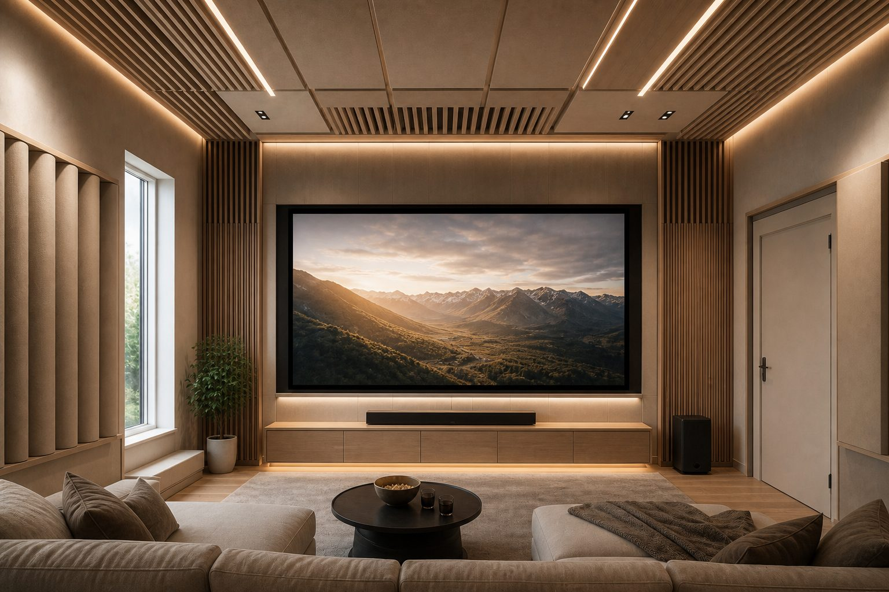

Акустика домашнего кинотеатра
Проектор и 7.1 — ещё не кинозал. Нужно не разбудить соседей басом, не слышать их в тишине сцены и получить в комнате звук, ради которого комнату вообще затеяли. Ограждения и виброразвязка — одно. Внутренняя обработка — другое. Пропускают второе — получается тихо снаружи и «бетон» внутри.

Что реально приходится решать
Не мешать соседям — особенно на низах. Взрыв, долгий гул саба, вечером на −10 дБ от «киношной» громкости — типичные жалобы снизу и сбоку. Не слышать их, когда на экране тишина: шаги, разговоры, лифт. И внутри — чёткий диалог, объём, без гула в углах. Первые две задачи — звукоизоляция и виброразвязка. Третья — внутренняя акустика.
Мощная система без изоляции — конфликт с соседями. Изоляция без обработки — окружение спокойно, комната гулкая. Обычно нужен спецпроект, где оба контура согласованы с расстановкой колонок и саба.
Квартира и дом
В квартире рамки жёстче: нельзя бесконечно утолщать все стены, перекрытие общее, высота потолка фиксирована. В частном доме больше свободы: плавающий пол, массивные перегородки, отдельный уровень под технику. Бас и отражения всё равно считают — просто есть место для манёвра.
Ситуация
Комната 20 м², система 7.1, соседи снизу и сбоку. Ремонт ещё не начат.
Что проверяет ЦИА
Момент для спецпроекта: ограждения, пол, внутренняя обработка, размещение колонок и саба — до черновой.
Выбор комнаты
Подвал или внутренняя комната без соседей с трёх сторон лучше угловой спальни в панельной новостройке. Планировка диктует расстановку: симметрия, дистанция до экрана, отражения от боковых стен. Большое стекло красиво, но отражает жёстко — либо учитывают в обработке, либо сдвигают зону экрана.
Как идём с инженером
Бриф: какая система, насколько громко слушаете, кто соседи, этап ремонта. Обследование: план, конструкции, при необходимости замер. Дальше — ограждения, пол, узлы, внутренняя акустика, рекомендации по технике. Монтаж по узлам с контролем до закрытия. Контрольный замер после — единственный честный способ сравнить «до/после», без цифр из каталога материалов.
Оборудование и комната
Чем громче планируете слушать, тем серьёзнее контур ограждений. Это надо согласовать заранее. Подбор усилителя и калибровка — отдельная специализация; ЦИА закрывает комнату как конструкцию и среду, не AV-инсталляцию.
Что ломает результат
Колонки куплены до ремонта и «как-нибудь повесим». Саб в угол на жёсткий пол без развязки. Звукоизоляция одной стены, когда соседи снизу и сверху. Поролон вместо расчётной обработки — середина убита, бас кривой. Проект отложили до чистовой — потеряли пол и перегородки как ресурс. Щель под дверью и незакрытая проходка — звук уходит в коридор, даже если стены сделаны по проекту. Про слабые места — мостики и щели. Про гул — почему гудит комната.
Когда подключать
Коробка — лучший момент: видны ограждения, можно заложить пол, стены, потолок, проходки. См. когда подключать акустика при ремонте. На раннем этапе — дистанционная оценка по плану, чтобы понять масштаб до сметы.
Пропорции и бас в углах
Низы складываются в углах и у длинных параллельных стен — комната гудит на отдельных нотах. Это внутренняя акустика. Соседи слышат бас не «из вашего угла», а из вибрации пола и стен. В проекте — развязка ограждений и обработка низов внутри: бас-ловушки, позиция саба, иногда ниши. Универсального «угол из инструкции» на объекте нет.
Если ремонт ещё впереди
Напишите: стерео / 5.1 / 7.1, громкость просмотра, кто соседи и с каких сторон, этаж, тип перекрытия. План квартиры — на дистанционной оценке скажем, реалистичен ли зал в выбранной комнате. Для объекта студия / кинотеатр это обычный стартовый сценарий.
Соседи и честные границы
Полная тишина для соседей при мощном сабе в панельной новостройке — задача с условиями: масса, развязка пола, иногда ограничение по времени. Честный проект называет границы. Контрольный замер после монтажа проверяет узлы, а не факт покупки материалов.
Инсталлятор и акустика помещения
Усилитель и калибровка — их зона. Мы описываем, куда можно ставить саб с точки зрения вибрации, какие стены усиливать, где нужны поглотители. Согласование на стадии проекта избавляет от ситуации «колонки уже куплены, стена громкость не выдержит».
Частые вопросы
Оставить заявку
Опишите помещение и задачу — подскажем формат работы ЦИА. Если вы прошли Проблемомер, поля заполнятся автоматически.
Задача отправлена